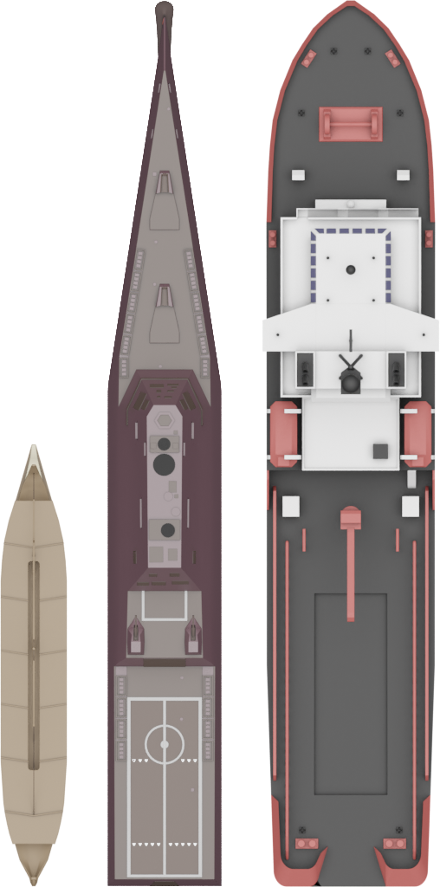

Ramming is the act of hitting another ship with your vessel.
This can be done both on purpose or by accident, and both to the advantage and/or detriment of your own vessel. Ramming can be done with any ship and should be part of every captain's arsenal of techniques.
Ramming TechniqueThe most basic ramming technique is to simply drive your ship into the enemy vessel. The success of this is dependent upon your opponents awareness, skill and ship. Larger ships with big turning radii and slow maneuvering will often be unable to escape from a well-timed ram despite the valiant efforts of a good captain. With practice and experience you will understand which battles you can win with a ram and which you can't.
How to Ram EffectivelyThree ships currently have enhanced ramming capabilities: the Olympias, Zumwalt & Terry Fox with 3x, 1.5x and 2.5x damage respectively (show in the image from left to right in speed order). For most effective ramming, you should be using one of those three ships.
To get the most out of your ram you should aim to hit the center of the vessel, which for most ships is the beam. Hitting the bow or stern of a ship reduces the damage dealt by 20% for submarines, and 40% for all other ships. This decreases exponentially as you hit closer towards the middle of the boat, where you will deal full damage. This is the fundamental idea behind Ram vs Ram combat: ramming your opponent directly in the middle from abeam and stopping them from doing the same to you.
The reduced ramming damage of submarines precludes them from the upper echelons of ram effectiveness, though they are not completely useless.
Normally, there is no counterplay for an Olympias or Terry Fox against a submarine since, simply by pressing R, the submarine can become invincible against all ramming attacks. However, when a submarine attempts to go through shallow water it will not only be lifted out of the water allowing you to ram it, but also its speed will be reduced by as much as 40%. This puts even the fastest submarines at well below the speed of the Olympias, though the level 8 & 9 submarines will still be faster than the Terry Fox. Therefore, you should attempt to lead the submarine into shallow waters, or even just a single raised spot, and ram them. The enemy submarine will be incredibly slow if she tries to reverse, causing her only options to be driving into your bow or turning sideways to reveal her juicy beam - both being quite fatal. The Olympias is small and nimble enough to dodge any torpedos launched by the submarine, and is therefore my favourite anti-sub ram.

The image above showcases the different speeds of ships in mk48. Commit it to memory and use it to pick your battles: there is no point chasing a Freedom-class littoral combat ship as an Olympias because you will simply never be able to catch up.
It is important to note that ramming will give you half the score of a normal kill. This means you will get only an eighth of the score of the person you kill (and the score from the scrap they drop).
If the reduced score gain is not a worry for you, upgrading to a Terry Fox or Zumwalt as a final measure to kill an opponent when you have run out of weapons to fire is a good move however you should take care not to reduce your speed too much and risk being unable to hit their hull at all. This has massively reduced effectiveness if you upgrade while submerged as submerged boats have greatly weakened hulls.
A technique, applicable to all ships generally, is to use the scrap and oil barrels dropped from rigs to block torpedos. This is especially effective when using the Olympias as the small pickup zone will allow many of the items to remain static on the water. These drops can also be used for emergency healing if needed.
Above is a video showcasing a large variety of Olympias ram kills. See if you can spot some of the techniques discussed above in the video!